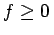
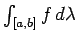

Sei ein Maßraum und seien meßbare Funktionen und .
Ist f integrierbar, dann ist f fast überall endlich, d.h. .
Ist f integrierbar, dann gilt .
Ist f integrierbar und , dann gilt .
Ist auf und f integrierbar, dann ist g integrierbar, und es gilt .
Sind f, g integrierbar, dann ist integrierbar, und es gilt .
Sind f, g integrierbar auf , d.h., es existieren die Integrale und (s. 12.206), mit , dann gilt -f.ü. auf .
Ist und das LEBESGUE-Maß, dann spricht man vom (n-dimensionalen) LEBESGUE-Integral. Im Falle n=1 und A=[a,b] ist für jede stetige Funktion f auf [a,b] sowohl das RIEMANN-Integral als auch das LEBESGUE-Integral  definiert. Beide Werte sind endlich und stimmen überein. Mehr noch, ist f eine auf [a,b] beschränkte RIEMANN-integrierbare Funktion, dann ist sie auch LEBESGUE-integrierbar (integrierbar im LEBESGUEschen Sinne), wobei die Werte beider Integrale identisch sind (Natürlichkeit des LEBESGUE-Integrals). Die Menge der LEBESGUE-integrierbaren Funktionen ist aber wesentlich umfassender als die Menge aller RIEMAN-integrierbaren Funktionen und besitzt eine Reihe von Vorteilen, die sich insbesondere bei Grenzübergängen unter dem Integral zeigen.